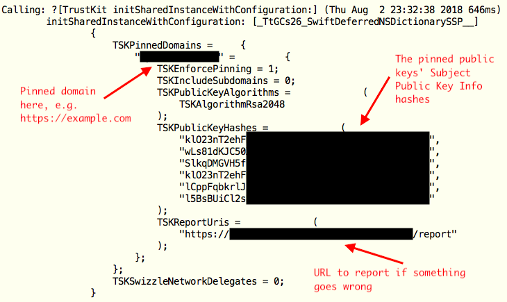
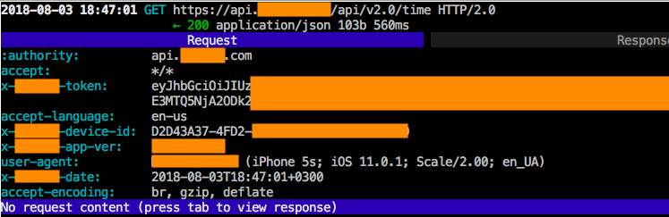

This is a blog post about disabling SSL pinning… yes, again! :) About two weeks ago I researched an iOS application. The application used TrustKit from DataTheorem to implement SSL pinning. My goal was to bypass the protection and intercept the traffic. Here is a quick research.
Note! The research was a part of a bug bounty program. According to the bug bounty NDA, I can’t share the application name, so I removed any application-related details from screenshots. Thanks for your understanding.
After digging the TrustKit sources on GitHub, I found two relatively simple tricks to bypass TrustKit. First one looked barely legal. The application initialized TrustKit as follows:

According to the TrustKit documentation, it was enough to hook
+[TrustKit initSharedInstanceWithConfiguration:]
and set TKSEnforcePinning to zero at the method entry point. It might work, but it needed to get a mutable copy of the NSDictionary with the settings, then to get all nested dictionaries and their mutable copies, then to alternate them all, then to assemble all that crap back into a “fixed” immutable setting dictionary… it was too much coding for a lazy guy like me :)
So I found another way. I just replaced
// See https://github.com/datatheorem/TrustKit/blob/master/TrustKit/Pinning/ssl_pin_verifier.m
// for details
TSKTrustEvaluationResult verifyPublicKeyPin(
SecTrustRef serverTrust,
NSString *serverHostname,
NSSet<NSData *> *knownPins,
TSKSPKIHashCache *hashCache
)
with a dummy function in runtime. It always return TSKTrustEvaluationSuccess (=0). It was easy. Here is the Frida script:
/*
This is bypass_trustkit.js. To start the script, run
$ frida -U -f the.app.bundle.Name --no-pause -l bypass_trustkit.js
*/
function main() {
// Get verifyPublicKeyPin address
var symbols = Module.enumerateSymbolsSync("TrustKit");
var verifyPublicKeyPin_prt = null;
for (var i = 0; i < symbols.length; i++) {
if (symbols[i]["name"] === "verifyPublicKeyPin") {
verifyPublicKeyPin_prt = symbols[i]["address"];
break;
}
}
// Did we find verifyPublicKeyPin?
if (verifyPublicKeyPin_prt == null) {
console.log("[!] TrustKit!verifyPublicKeyPin(...) not found!");
return;
}
// Hook verifyPublicKeyPin
Interceptor.replace(
verifyPublicKeyPin_prt,
new NativeCallback(function(serverTrust, serverHostname, knownPins, hashCache) {
return 0; // =TSKTrustEvaluationSuccess
},
"int", ["pointer", "pointer", "pointer", "pointer"]));
// It's done!
console.log("[*] verifyPublicKeyPin(...) hooked. SSL pinning should be disabled now.");
}
// Run the script
main();
It worked for me, I intercepted the traffic:

Warning! If you wanna use the script, do it on your own risk. Stable and safe work of the script is not guaranteed!
So it goes.
Commenting is not available in this blog, but you can write me a letter or message. Please, note that English is not my native language. I'm sorry for mistakes/missprints, if any.
Prev: Cracking SSL pinning in AFNetworking